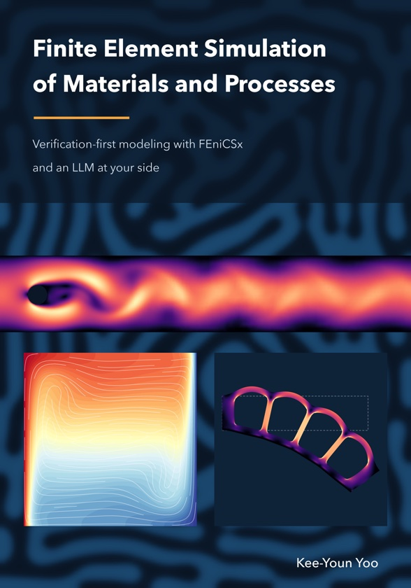

AI-based Materials and Process Simulation
Finite element methods with FEniCSx (DOLFINx 0.11) on Google Colab, with an LLM-assisted workflow
Department of Chemical and Biomolecular Engineering, SeoulTech
Courses
AMPS I · Foundations
Weak forms, convergence and verification, nonlinear and time-dependent problems, Stokes and Navier–Stokes, saddle-point solvers, advection–diffusion — 16 weeks of slides, Colab notebooks and homework, term project
AMPS II · Solids, Coupled Transport and Projects
Elasticity, plasticity, viscoelasticity and fracture, dynamics, beams, plates and shells, homogenization, cohesive interfaces, natural convection, reactive flow, porous media, phase separation and parallel performance — term projects A–J
Textbook

Finite Element Simulation of Materials and Processes
Verification-first modeling with FEniCSx and an LLM at your side
The textbook grown from these two courses: 26 chapters in four parts, from weak forms to research case studies, with every number produced by the code it describes. First complete draft, November 2026.
The cover shows results computed with the book's own code: phase separation, the vortex street behind a cylinder, natural convection and a soft actuator bent by its chamber pressure.
Getting started
- Each course page has the syllabus, the week-by-week materials, the DOLFINx 0.11 API reference sheet and the AI-usage log template.
- Notebooks run on Google Colab with the fenicsx-colab setup cell (about 3–5 minutes per runtime).